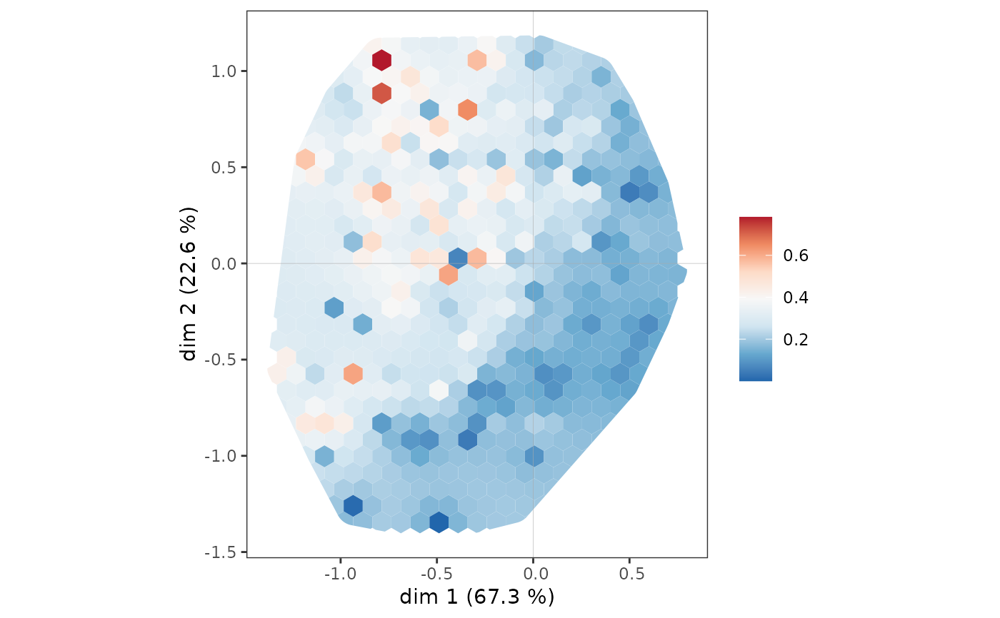
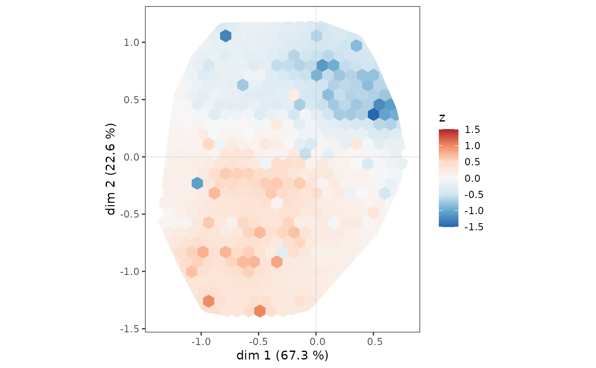

ggsmoothed_supvar.RdPlots the density of a supplementary variable in a MCA space, using a grid, smoothing and interpolation (via inverse distance weighting.)
object created with MCA, speMCA, csMCA, wcMCA, bcMCA, stMCA or multiMCA function
factor or numeric vector. The supplementary variable to be plotted.
character string. If var is a factor, the name of the level of the supplementary variable to be plotted.
numeric vector of length 2, specifying the components (axes) to plot. Default is c(1,2).
logical. Whether the supplementary variable should be centered or not. Default is FALSE.
logical. Whether the supplementary variable should be scaled to unit variance or not. Default is FALSE.
integer vector of length 2. Number of grid cells in x and y direction (columns, rows).
numerical value. The power to use in weight calculation for inverse distance weighting. Default is 2.
numerical vector of length 2. Lower and upper limit of the scale for the supplementary variable.
character string. Name of a (preferably diverging) palette from the RColorBrewer package. Default is "RdBu".
The construction of the plot takes place in several steps. First, the two-dimensional MCA space is cut into a grid of hexagonal cells. Then, for each cell, the average value of the supplementary variable is calculated for the observations located in that cell (if the variable is numerical), or the proportion of observations belonging to the category studied (if the variable is categorical). The results are interpolated and smoothed to make the plot easier to read, using the inverse distance weighting technique, which is very common in spatial analysis.
The supplementary variable can be centered beforehand, to represent deviations from the mean (for a numerical variable) or from the mean proportion (for a categorical variable). It can also be scaled to measure deviations in numbers of standard deviations, which can be useful for comparing the results of several supplementary variables.
a ggplot2 object
Shepard, Donald (1968). "A two-dimensional interpolation function for irregularly-spaced data". Proceedings of the 1968 ACM National Conference. pp. 517–524. doi:10.1145/800186.810616
# specific MCA of Taste example data set
data(Taste)
junk <- c("FrenchPop.NA", "Rap.NA", "Rock.NA", "Jazz.NA", "Classical.NA",
"Comedy.NA", "Crime.NA", "Animation.NA", "SciFi.NA", "Love.NA",
"Musical.NA")
mca <- speMCA(Taste[,1:11], excl = junk)
# density plot for Educ = "High"
ggsmoothed_supvar(mca, Taste$Educ, "High")

# centered and scaled density plot for Age
ggsmoothed_supvar(mca, as.numeric(Taste$Age), center = TRUE, scale = TRUE)
